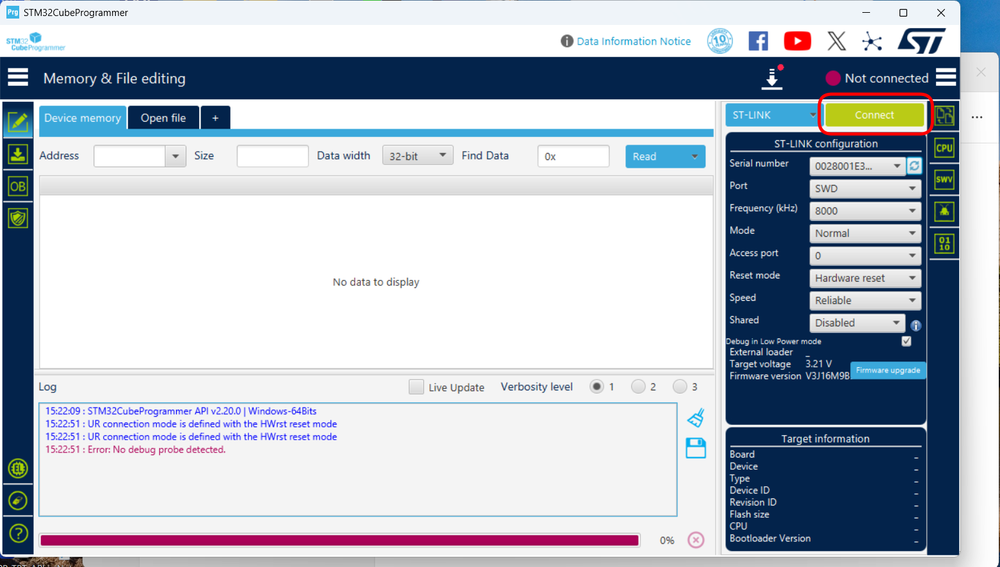
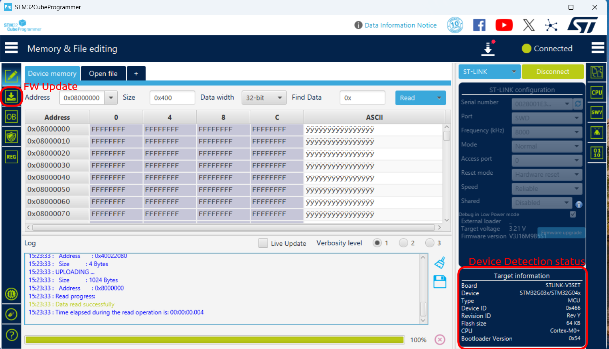
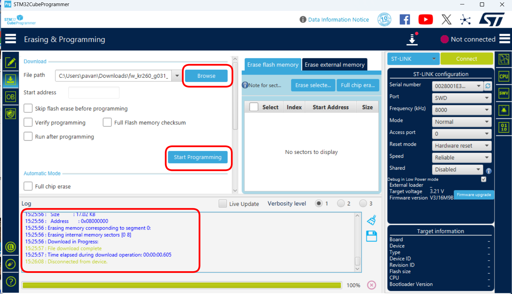
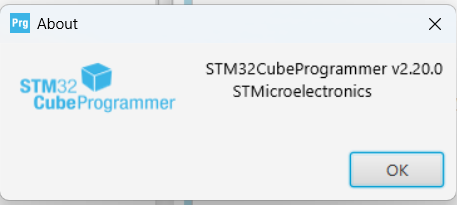

Manufacturing · Controlled procedure
Production
Programming Guide
KR260 Reset Controller
Programming and verification of the STM32G031K8T6 reset controller using STLINK-V3SET and STM32CubeProgrammer.
Document control
| Product / assembly | KR260 Reset Controller |
| Target MCU | STM32G031K8T6 (64 KB Flash, Arm Cortex-M0+) |
| Programmer | STLINK-V3SET |
| Programming interface | SWD |
| Programming software | STM32CubeProgrammer v2.20.0 or approved production version |
| Firmware file | fw_kr260_g031_reset.elf |
| Firmware revision | 0.1 |
| Firmware SHA-256 | 6a8dfa501cb82b7f2b03ed420f9e6a9a8a9f8b62626d8c7e7b10ce98fb19ef2a |
| Document revision | Draft 0.1 |
| Owner | Prasanna | Firmware Team |
| Effective date | 16 October 2026 |
01 Purpose
This guide explains how to program the STM32G031K8T6 reset controller with an approved .elf firmware file, using an STLINK-V3SET and the graphical interface of STM32CubeProgrammer.
02 Required items
fw_kr260_g031_reset.elf
Download approved firmware
- Production PC with an available USB port.
- STLINK-V3SET with USB cable.
- Approved programming cable, adapter, or production fixture.
- Carrier card and its approved power supply. The Kria SOM is not required and must not be fitted during STM32 programming.
- ESD-protected workstation and wrist strap.
03 Important safety and quality rules
VTref; the production fixture must power the target board using its approved supply unless the fixture specification explicitly states otherwise. Do not assume the debug connector powers the board.Use only the released .elf file identified in the work order and supplied through the approved firmware link.
04 SWD connections
Connect the approved fixture according to the board drawing. The minimum signals required by this procedure are:
| STLINK-V3SET signal | Target signal | Purpose |
|---|---|---|
VTref / target voltage sense | Target I/O supply reference | Allows the probe to detect target logic voltage |
GND | Target ground | Common electrical reference |
SWDIO | MCU SWDIO | Serial-wire bidirectional data |
SWCLK | MCU SWCLK | Serial-wire clock |
NRST | MCU reset | Required for the selected Hardware reset connection mode |
05 Before programming
- Download the approved firmware package and save it to the controlled local production folder.
- Confirm the file name is exactly
fw_kr260_g031_reset.elf. - Verify its SHA-256 checksum against the value in the Document control table. If it does not match, stop and quarantine the file. Firmware revision
0.1is not read back from the STM32; the approved file name and SHA-256 checksum identify the production firmware. - Confirm that the Kria SOM is not installed. Only the carrier card is required for programming the reset controller.
- With carrier-card power off, connect the STLINK-V3SET to the target.
- Connect the STLINK-V3SET to the PC by USB.
- Apply the approved carrier-card power.
06 Connect to the target
- Open STM32CubeProgrammer.
- Select ST-LINK as the connection type.
- Set the ST-LINK configuration to the approved values shown below.
| Setting | Approved value |
|---|---|
| Port | SWD |
| Frequency | 8000 kHz |
| Mode | Normal |
| Access port | 0 |
| Reset mode | Hardware reset |
| Speed | Reliable |
| Shared | Disabled |
- Confirm that the expected STLINK-V3SET serial number is displayed when the workstation or fixture controls probe assignment.
- Select Connect.

- Confirm that the top-right status changes to Connected.
- Confirm the target information is consistent with the production device.
| Displayed field | Expected result |
|---|---|
| Board / probe | STLINK-V3SET |
| Device family | STM32G03x/STM32G04x |
| Flash size | 64 KB |
| CPU | Cortex-M0+ |

07 Program and verify the firmware
- Select the Erasing & Programming icon in the left toolbar (down-arrow symbol).
- In File path, select Browse and choose the approved
fw_kr260_g031_reset.elffile. - Reconfirm the complete file name and its folder before continuing.
- Set the programming options to the required states below.
| Option | Required state |
|---|---|
| Skip flash erase before programming | Cleared |
| Verify programming | Selected |
| Run after programming | Cleared |
| Full Flash memory checksum | Cleared unless required by the production traveler |
.elf file, STM32CubeProgrammer obtains the programmed addresses from the file. Do not manually enter a start address.- Select Start Programming.
- Do not remove power, unplug USB, move the fixture, or disconnect the cable while programming is in progress.
- Wait for both programming and verification to finish.
- Confirm the log reports successful download and verification with no red error messages. A download message without successful verification is not an acceptable production result.

08 Disconnect and perform the functional check
8.1 Prepare the assembly
- Select Disconnect in STM32CubeProgrammer.
- Turn carrier-card power off and allow the power rails to discharge.
- Disconnect the STLINK-V3SET programming fixture from the carrier card.
- Install the approved Kria SOM on the carrier card while power remains off.
- Connect the normal boot media, serial console, network cable, and other test equipment required by the production test station.
8.2 Verify power-on boot
- Capture the Kria boot console and apply normal product power.
- Using the programmed SD card, confirm that the Kria completes U-Boot and Linux startup.
- Confirm that the console reaches
Reached target Login Promptsand automatic login. - Record the power-on boot result as PASS.
8.3 Verify soft-reset boot
- Initiate the product's approved software reset while the system is running.
- Confirm that a new boot sequence appears on the console without manually cycling carrier-card power.
- Confirm that Linux again reaches
Reached target Login Promptsand automatic login. - Record the soft-reset boot result as PASS.
8.4 Verify QSPI firmware-update mode
- Use the product's approved control sequence to request QSPI firmware-update mode.
- Confirm that the console enters the recovery image and reports
QSPI 32 bit Boot Mode. - Confirm that the console reports
Xilinx boot image recovery tool web server is running on port 80. - Confirm that the firmware-update page is accessible at
http://192.168.0.111from the test PC configured on the same subnet. - Record the QSPI firmware-update-mode result as PASS.
8.5 Complete the test
- Turn product power off after all three functional checks pass.
- Record the results in the production log.
- Apply the programmed/inspected label if required by the manufacturing plan.
The unit passes only when both conditions are met:
09 Troubleshooting
| Symptom | Operator action |
|---|---|
| No ST-LINK detected | Check the USB cable and PC connection. Confirm the STLINK-V3SET power/status indicators. Try the approved spare USB cable or probe. |
| No target voltage | Confirm target power is on and VTref and GND are connected. Do not continue until the expected target voltage is present. |
| Cannot connect to target | Turn power off; reseat the fixture; inspect SWDIO, SWCLK, NRST, VTref, and GND; power on and retry once. If permitted by the station instruction, reduce SWD frequency to 4000 kHz and retry. |
| Wrong device or Flash size | Stop. Verify that the correct board is loaded and that the fixture is correctly aligned. Do not program the unit. |
| ELF file rejected | Confirm that the approved file was completely downloaded and has the expected .elf extension and SHA-256 checksum. |
| Programming or verification fails | Do not mark the unit as passed. Power-cycle the target, inspect/reseat the fixture, and retry once. If it fails again, record the error and move the unit to the designated failure/quarantine area. |
| Functional test fails after programming | Repeat the functional test once according to its instruction. If it still fails, record the failure and quarantine the unit; do not repeatedly reprogram it unless authorized. |
10 Reference — software version
The screenshots in this guide were captured with STM32CubeProgrammer v2.20.0. Minor visual differences are acceptable only when the production team has approved another software version and the required settings remain available.
